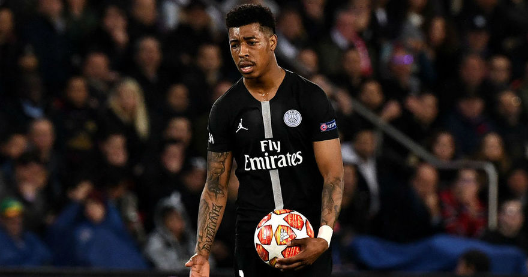
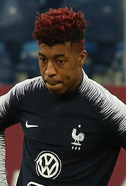

Presnel Kimpembe (Beaumont-sur-Oise, Valle del Oise, Francia, 13 de agosto de 1995) es un futbolista francés que juega como defensa y su equipo es el París Saint-Germain F. C. de la Ligue 1 de Francia.
Hijo de padre congoleño y madre haitiana, Kimpembe nació en Beaumont-sur-Oise, Francia. Kimpembe hizo su debut profesional con el París Saint-Germain de la Ligue 1 el 17 de octubre de 2014, contra el Racing Club de Lens, reemplazando a Thiago Motta en el minuto 76, partido en el que ganaría su equipo por 3 a 1.
Presnel ha sido internacional con la selección de la República Democrática del Congo en la categoría sub-21, y la selección de Francia en las categorías sub-20 y sub-21. Fue citado por primera vez por la selección de la República Democrática del Congo, para jugar un partido amistoso sub-21 contra Austria en la fecha FIFA de octubre. Debutó el 12 de octubre de 2014, fue titular, jugó los 90 minutos contra los europeos y perdieron 3 a 0. Disputó el encuentro con 19 años y 60 días, dando ventaja con la edad. Luego, fue citado por la Federación Francesa de Fútbol y aceptó, para entrenar y jugar dos amistosos sub-20 en la fecha FIFA de marzo. Debutó con Francia el 26 de marzo de 2015, jugó como titular contra Uruguay, se enfrentó a jugadores como Gastón Pereiro, Nahitan Nández, Mauro Arambarri, Mauricio Lemos y Gastón Guruceaga, el partido finalizó 1 a 1. Cuatro días después, nuevamente fue titular y jugó los 90 minutos, su rival fue Catar, selección a la que derrotaron 2 a 1. En el mes de mayo, fue convocado para jugar el Torneo Esperanzas de Toulon de 2015. Le fue asignada la camiseta número 4. Francia quedó en primer lugar del grupo, al ganar los 4 partidos, por lo que clasificaron a la final, contra Marruecos, combinado al que vencieron 3 a 1. Presnel Kimpembe fue titular en los 5 partidos. En el mes de septiembre, fue convocado a la sub-21 francesa, para jugar la fase de clasificación a la Eurocopa Sub-21 de 2017. Debutó en la competición el 5 de septiembre de 2015, jugó los 90 minutos contra Islandia pero perdieron 3 a 1. Fue convocado para representar a la selección absoluta de Francia en la Copa Mundial de Fútbol de 2018. Jugó tan solo un partido de la fase de grupos, y se proclamó campeón del Mundo al derrotar Francia por 4-2 a Croacia en la Final.